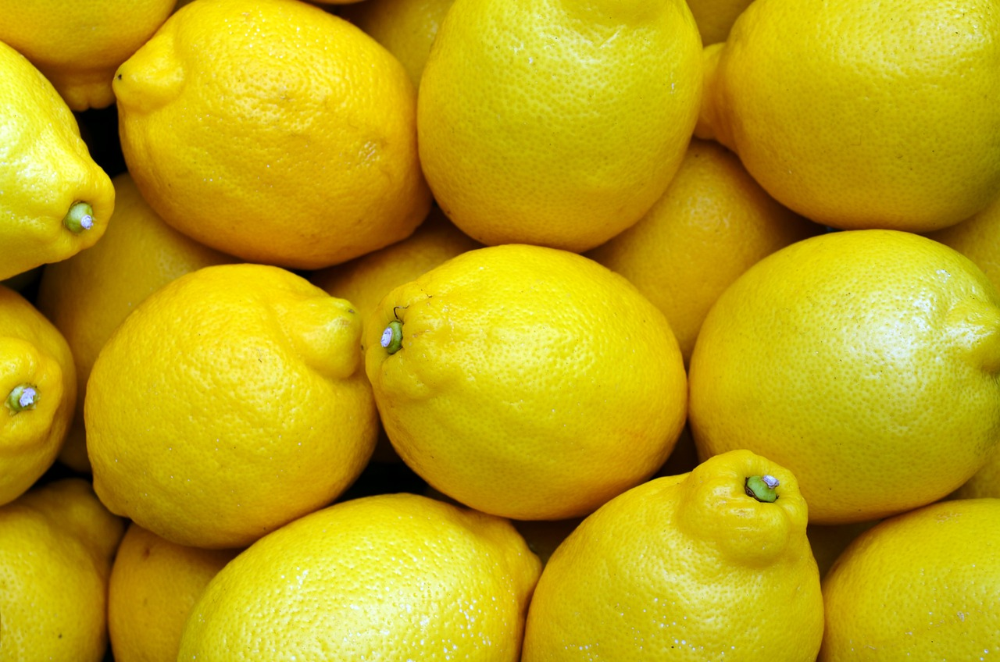

Nosotros

¿Quiénes somos?
Fresh Pulpas S.A.S es una microempresa dedicada a la fabricación y comercialización de pulpas de fruta, limonadas y zumos. Nos encontramos en la ciudad de Medellín, Antioquia. La empresa fue creada en el año 2019 como un negocio familiar surgida por la necesidad de una empresa del sector teniendo en cuenta que las pulpas de fruta son cada día un producto muy demandado en el mercado.

Misión
Fresh Pulpas S.A.S es una empresa dedicada a la producción y comercialización de productos basados en frutas, tanto como para el mercado local como para los mercados internacionales, con un personal competente enfocado en la mejora continua, en la satisfacción de las necesidades y espectativas del cliente, los legales, los reglamentarios y los de la organización.

Visión
En el año 2022 Fresh Pulpas será una organización líder en el mercado de pulpas de fruta congelada, pulpa de fruta pasteurizada, limonadas, combinados de frutas y zumos de fruta, que cumple con los estándares y certificación de calidad para los mercados nacionales e internacionales en el ámbito de calidad, de medio ambiente y responsabilidad social.
Productos

Pulpas
En Fresh Pulpas ofrecemos gran variedad de sabores de pulpas además de diferentes tipos de presentaciones para sus productos. A continuación te mostramos la variedad de sabores que tenemos para ti:
| Fruta | 130g x10Und | 500g | 1000g |
|---|---|---|---|
| Fresa | $10.000 | $3.900 | $7.600 |
| Tamarindo | $10.000 | $3.700 | $7.500 |
| Mora | $9.300 | $3.700 | $7.200 |
| Curuba | $9.000 | ||
| Mango | $9.300 | $3.900 | $7.200 |
| Uchuva | $9.000 | ||
| Maracuyá | $11.000 | $3.900 | $7.900 |
| Mandarina | $11.500 | $4.300 | $8.600 |
| Borojó | $9.800 | $3.500 | $7.200 |
| Uva | $9.900 | $3.700 | $7.400 |
| Tomate de árbol | $9.000 | $3.500 | $7.000 |
| Guayaba | $9.000 | $3.500 | $7.000 |
Zumos
En Fresh Pulpas ofrecemos deliciosos zumos de fruta, los cuales vienen en presentación de 1 y 4 litros para que disfrutes de tus sabores favoritos.
- Limón 
- Mandarina
- Naranja